NQ=F 1m 破底翻 · 右肩在 MA20 上
只做日盤 09:30–15:45 ET。破底翻 → 收復粉紅 MA20（約 20 分鐘）→ 離開後右肩踩回 MA20 進場。停損在右肩低點下方，目標 1.5R；持有滿 60 根若收破 MA20 出場。進場若貼著下彎的 5m MA60（40 點內），或夾在下彎空頭排列的 5m MA20/MA30 蓋頭底下（45 點內），則略過。右肩要先從反彈高點拉回至少 25 點，收復後至少再過 30 根。進場收盤須貼著 1m MA20（高於不超過 8 點）；影線掃到但收盤彈走不算回踩，再等下一腳。大陰線砸上 MA20 這波作廢。只做日盤破底。 每筆附進場當下五分 K 對照。
30d · 2026-07-30 19:29 → 2026-08-28 16:59 ET · bars=28495
筆數9
勝率11.1%
總點數-148.4
勝/負1/8
QA 3筆 -55.5 · QB 4筆 -93.2 · QC 2筆 +0.4
漏斗：破底 212 → 深度夠 38 → 收復MA20 38 → 右肩回踩 9 → 進場 9（沒離開 7 · 沒收復 0 · 沒守住 12 · 風險 0 · 貼下彎5mMA60 13 · 貼下彎5mMA20/30蓋頭 0 · 間隔 0 · 追刀 0 · 時段 881）
be_stop1m右肩MA20QA5m對照
entry 28551.50 （右肩踩 1m MA20 28550.39）
stop 28524.50 (−27.0 pts，右肩低點下方）
target 28592.00 (1.5R)
exit 28551.50 be_stop
破底 08-03 09:32 low 28313.50 / 2h低 28383.50
收復 09:35 → 右肩 10:07
MA5 28565.2 / MA10 28582.3 / MA20 28550.4 / MA60 28484.0
5m MA20 28475.5 上彎 +30.9 （進場 − 5mMA20 = +76.0）
5m MA30 28460.5 上彎 +6.6 （進場 − 5mMA30 = +91.0）
5m MA60 28494.4 下彎 -3.6 （進場 − 5mMA60 = +57.1）
1m K
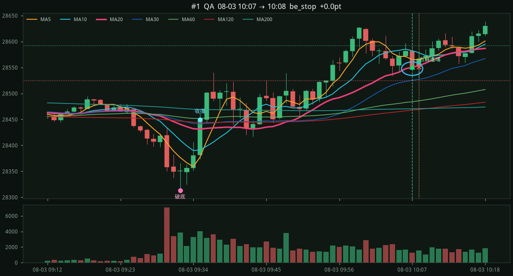
進場當下 5分K（粉紅 = 5m MA20）
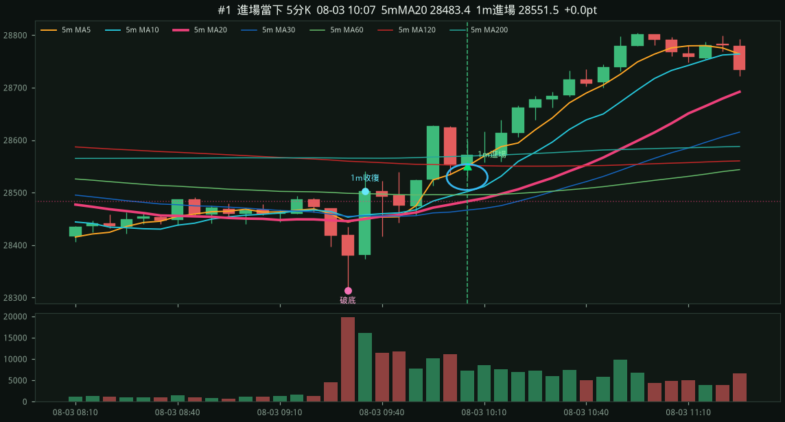
stop1m右肩MA20QB5m對照
entry 29798.75 （右肩踩 1m MA20 29797.44）
stop 29760.00 (−38.8 pts，右肩低點下方）
target 29856.88 (1.5R)
exit 29760.00 stop
破底 08-05 12:12 low 29702.00 / 2h低 29763.50
收復 12:16 → 右肩 12:48
MA5 29794.2 / MA10 29797.3 / MA20 29797.4 / MA60 29770.0
5m MA20 29796.8 下彎 -15.9 （進場 − 5mMA20 = +2.0）
5m MA30 29824.1 下彎 -42.2 （進場 − 5mMA30 = -25.3）
5m MA60 29887.6 下彎 -11.9 （進場 − 5mMA60 = -88.8）
1m K
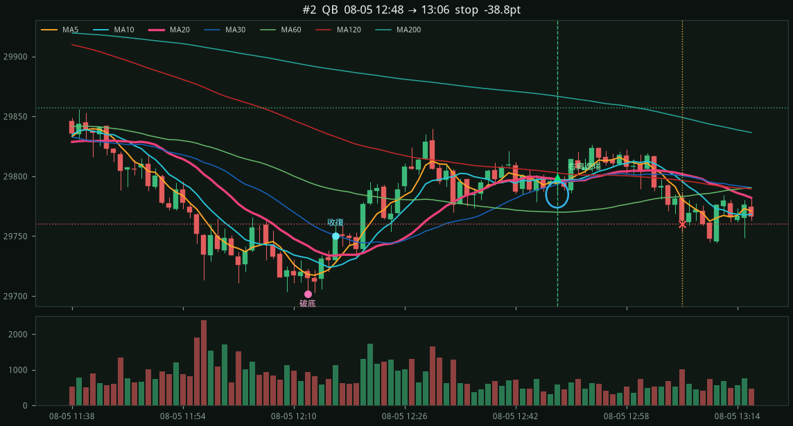
進場當下 5分K（粉紅 = 5m MA20）
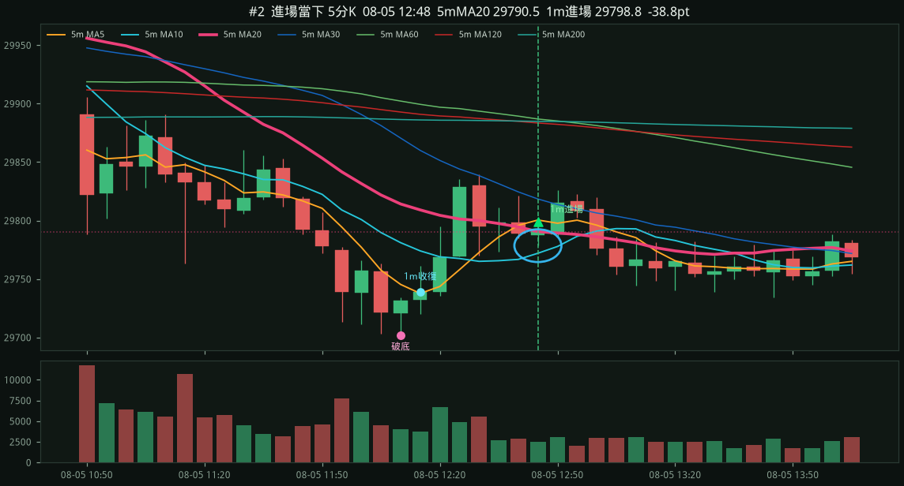
stop1m右肩MA20QA5m對照
entry 29620.00 （右肩踩 1m MA20 29613.84）
stop 29585.75 (−34.2 pts，右肩低點下方）
target 29671.38 (1.5R)
exit 29585.75 stop
破底 08-06 09:33 low 29241.25 / 2h低 29321.50
收復 09:34 → 右肩 10:25
MA5 29639.5 / MA10 29638.9 / MA20 29613.8 / MA60 29502.8
5m MA20 29456.3 上彎 +45.0 （進場 − 5mMA20 = +163.7）
5m MA30 29449.1 上彎 +20.3 （進場 − 5mMA30 = +170.9）
5m MA60 29465.4 上彎 +11.2 （進場 − 5mMA60 = +154.6）
1m K
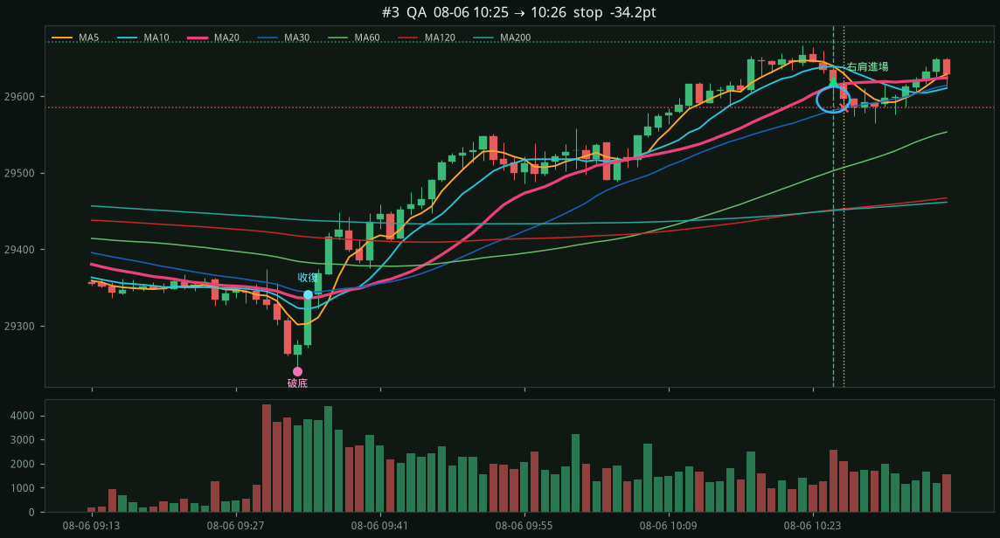
進場當下 5分K（粉紅 = 5m MA20）
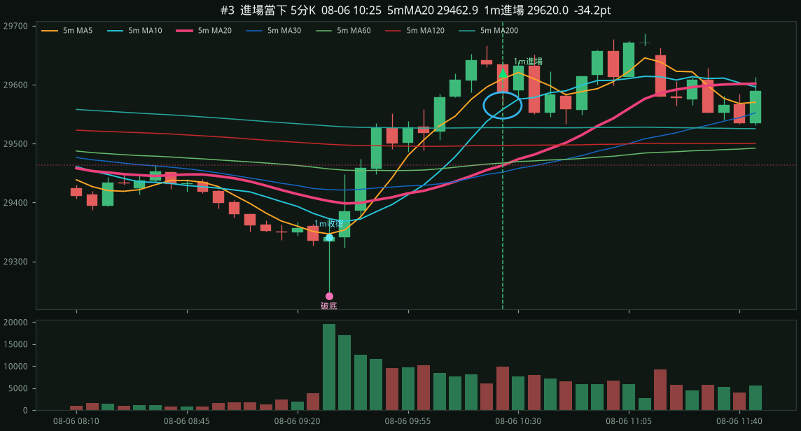
stop1m右肩MA20QA5m對照
entry 29542.75 （右肩踩 1m MA20 29540.75）
stop 29521.50 (−21.2 pts，右肩低點下方）
target 29574.62 (1.5R)
exit 29521.50 stop
破底 08-06 12:24 low 29448.50 / 2h低 29478.25
收復 12:30 → 右肩 13:10
MA5 29545.1 / MA10 29549.6 / MA20 29540.8 / MA60 29506.2
5m MA20 29525.6 下彎 -29.8 （進場 − 5mMA20 = +17.2）
5m MA30 29557.9 下彎 -16.6 （進場 − 5mMA30 = -15.1）
5m MA60 29512.0 上彎 +8.0 （進場 − 5mMA60 = +30.8）
1m K
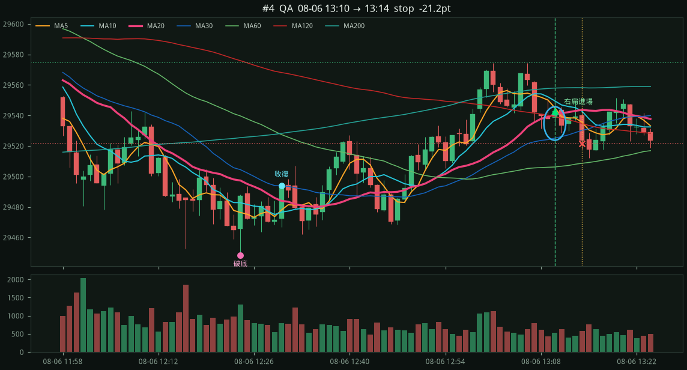
進場當下 5分K（粉紅 = 5m MA20）
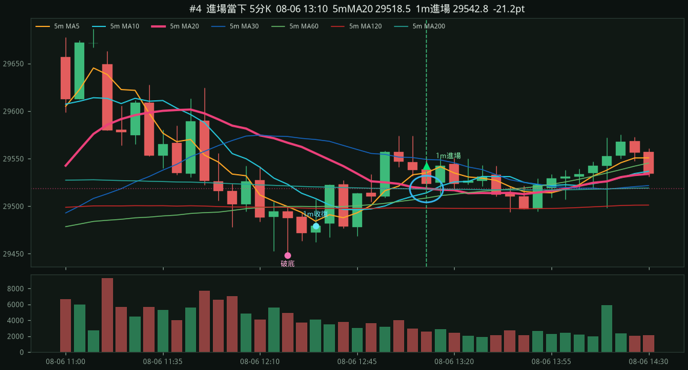
be_stop1m右肩MA20QB5m對照
entry 29600.50 （右肩踩 1m MA20 29596.31）
stop 29571.00 (−29.5 pts，右肩低點下方）
target 29644.75 (1.5R)
exit 29600.50 be_stop
破底 08-19 10:15 low 29375.75 / 2h低 29510.25
收復 10:16 → 右肩 11:10
MA5 29594.8 / MA10 29597.7 / MA20 29596.3 / MA60 29521.7
5m MA20 29528.8 下彎 -38.3 （進場 − 5mMA20 = +71.7）
5m MA30 29590.8 下彎 -0.5 （進場 − 5mMA30 = +9.7）
5m MA60 29568.4 上彎 +4.2 （進場 − 5mMA60 = +32.1）
1m K
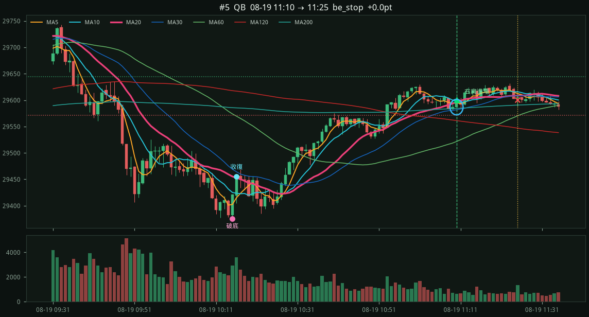
進場當下 5分K（粉紅 = 5m MA20）
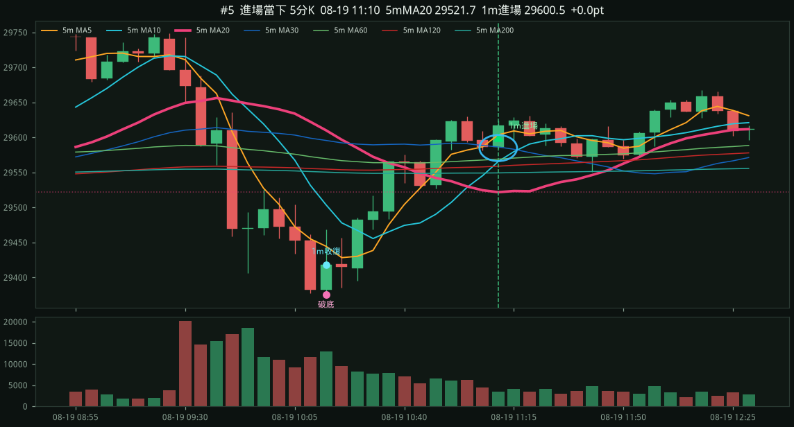
target1m右肩MA20QC5m對照
entry 29061.00 （右肩踩 1m MA20 29059.25）
stop 29032.25 (−28.8 pts，右肩低點下方）
target 29104.12 (1.5R)
exit 29104.12 target
破底 08-24 09:53 low 28946.75 / 2h低 29171.50
收復 09:58 → 右肩 11:18
MA5 29053.6 / MA10 29056.8 / MA20 29059.2 / MA60 29061.0
5m MA20 29035.4 下彎 -35.1 （進場 − 5mMA20 = +25.6）
5m MA30 29089.6 下彎 -29.5 （進場 − 5mMA30 = -28.6）
5m MA60 29150.3 下彎 -16.6 （進場 − 5mMA60 = -89.3）
1m K
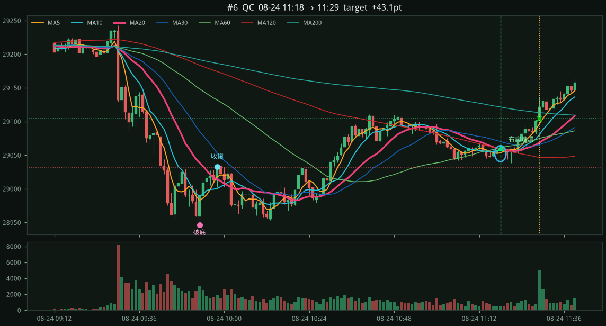
進場當下 5分K（粉紅 = 5m MA20）
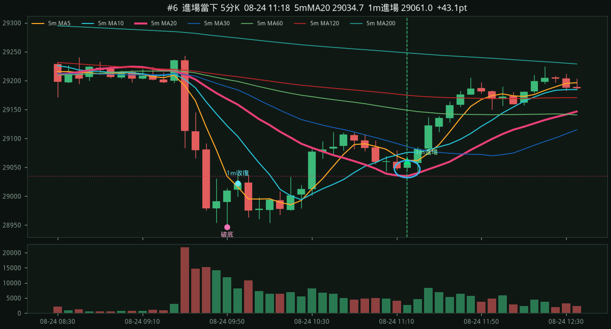
stop1m右肩MA20QB5m對照
entry 29269.00 （右肩踩 1m MA20 29268.64）
stop 29245.25 (−23.8 pts，右肩低點下方）
target 29304.62 (1.5R)
exit 29245.25 stop
破底 08-25 10:30 low 29138.00 / 2h低 29260.25
收復 10:36 → 右肩 11:43
MA5 29265.8 / MA10 29271.7 / MA20 29268.6 / MA60 29241.0
5m MA20 29242.4 下彎 -23.5 （進場 − 5mMA20 = +26.6）
5m MA30 29272.3 下彎 -14.0 （進場 − 5mMA30 = -3.3）
5m MA60 29312.1 下彎 -11.5 （進場 − 5mMA60 = -43.1）
1m K
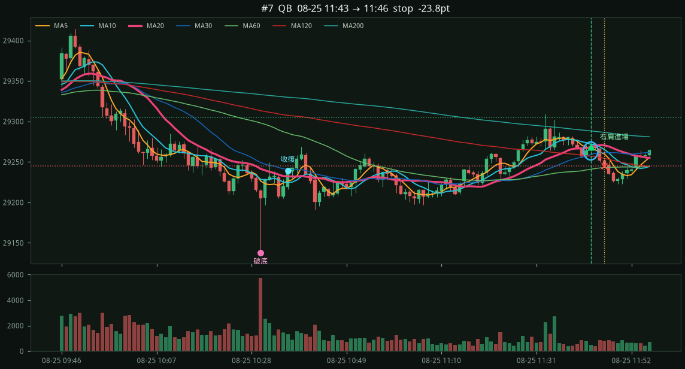
進場當下 5分K（粉紅 = 5m MA20）
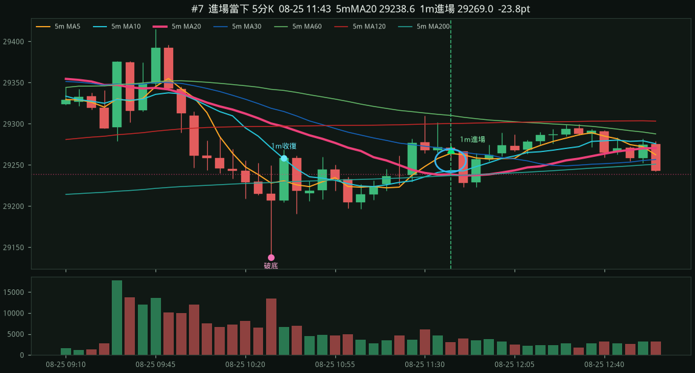
stop1m右肩MA20QC5m對照
entry 29768.00 （右肩踩 1m MA20 29764.00）
stop 29725.25 (−42.8 pts，右肩低點下方）
target 29832.12 (1.5R)
exit 29725.25 stop
破底 08-28 10:13 low 29505.00 / 2h低 29559.00
收復 10:18 → 右肩 11:23
MA5 29754.9 / MA10 29755.4 / MA20 29764.0 / MA60 29733.9
5m MA20 29690.3 上彎 +42.0 （進場 − 5mMA20 = +77.7）
5m MA30 29675.9 上彎 +26.9 （進場 − 5mMA30 = +92.1）
5m MA60 29649.2 上彎 +17.5 （進場 − 5mMA60 = +118.8）
1m K
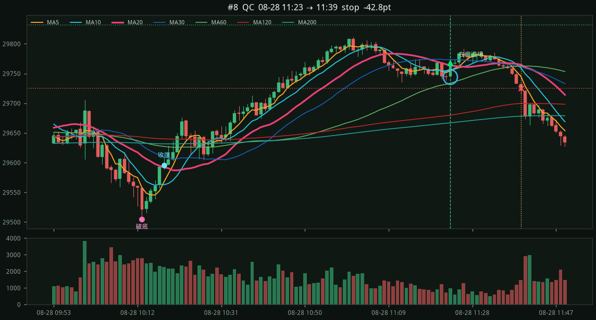
進場當下 5分K（粉紅 = 5m MA20）
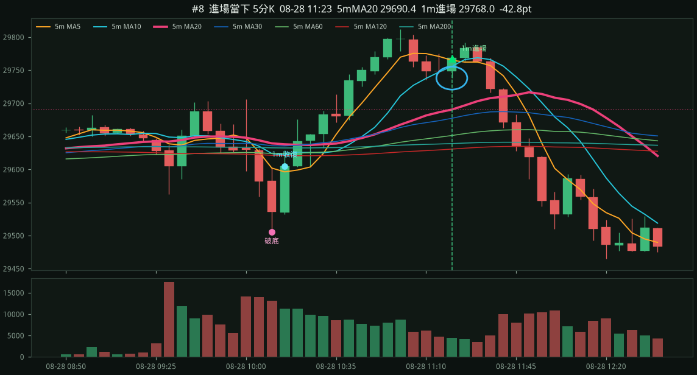
stop1m右肩MA20QB5m對照
entry 29492.00 （右肩踩 1m MA20 29491.66）
stop 29461.25 (−30.8 pts，右肩低點下方）
target 29538.12 (1.5R)
exit 29461.25 stop
破底 08-28 13:06 low 29436.25 / 2h低 29464.50
收復 13:13 → 右肩 14:31
MA5 29487.9 / MA10 29485.8 / MA20 29491.7 / MA60 29498.8
5m MA20 29486.3 下彎 -3.8 （進場 − 5mMA20 = +5.7）
5m MA30 29498.1 下彎 -29.9 （進場 − 5mMA30 = -6.1）
5m MA60 29591.2 下彎 -14.9 （進場 − 5mMA60 = -99.2）
1m K
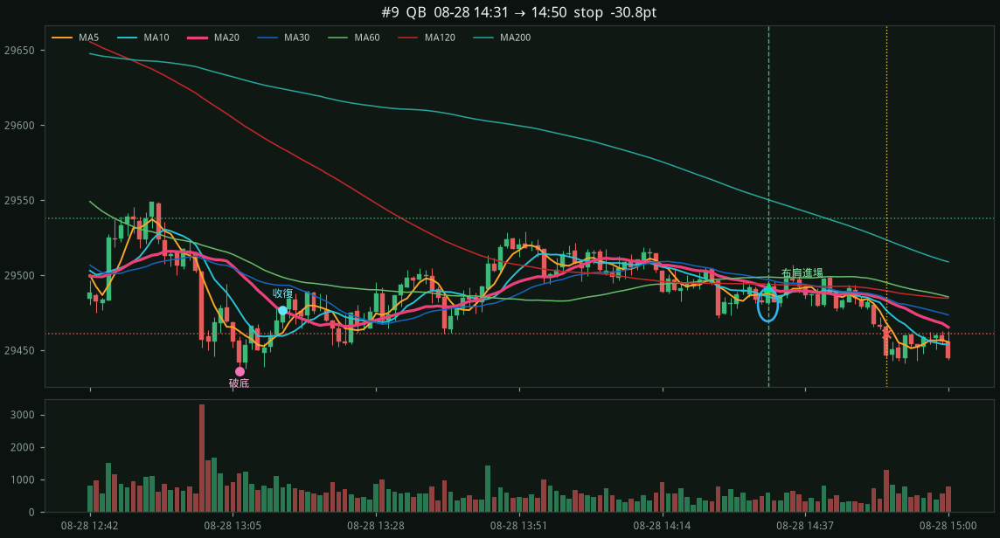
進場當下 5分K（粉紅 = 5m MA20）
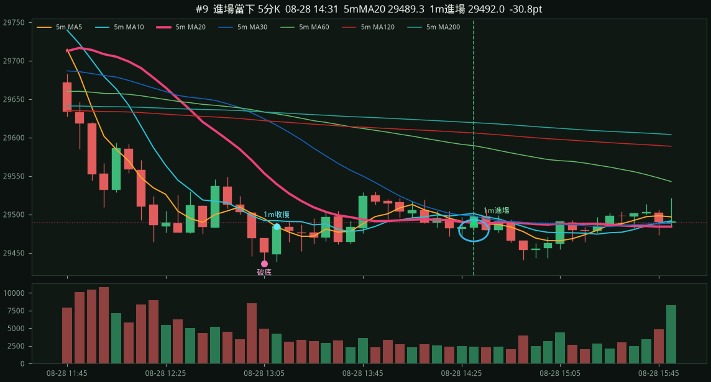